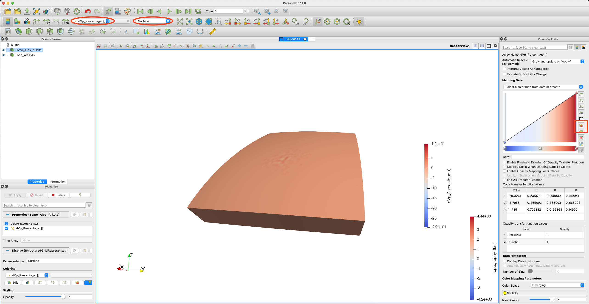
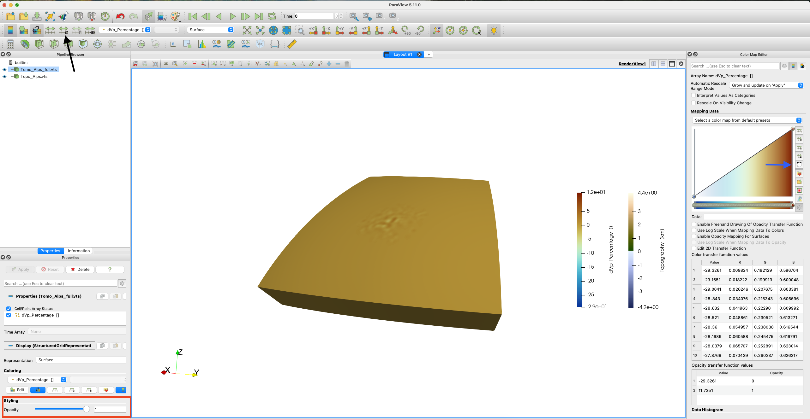
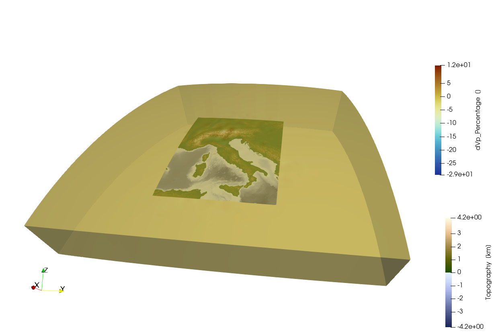
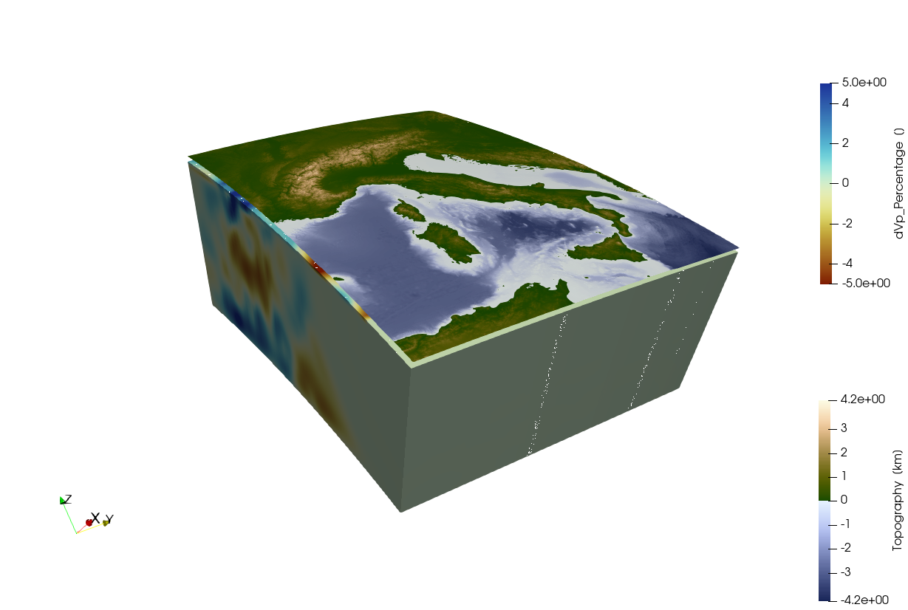
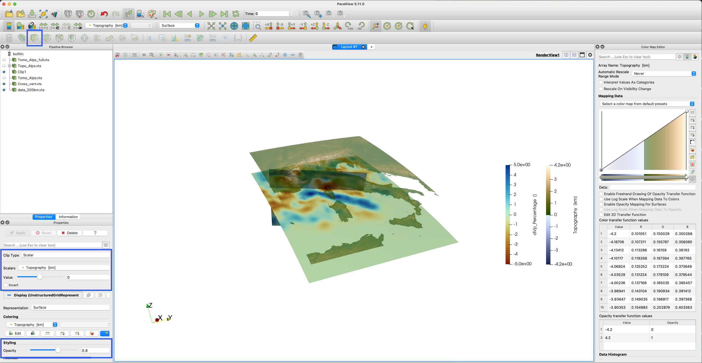
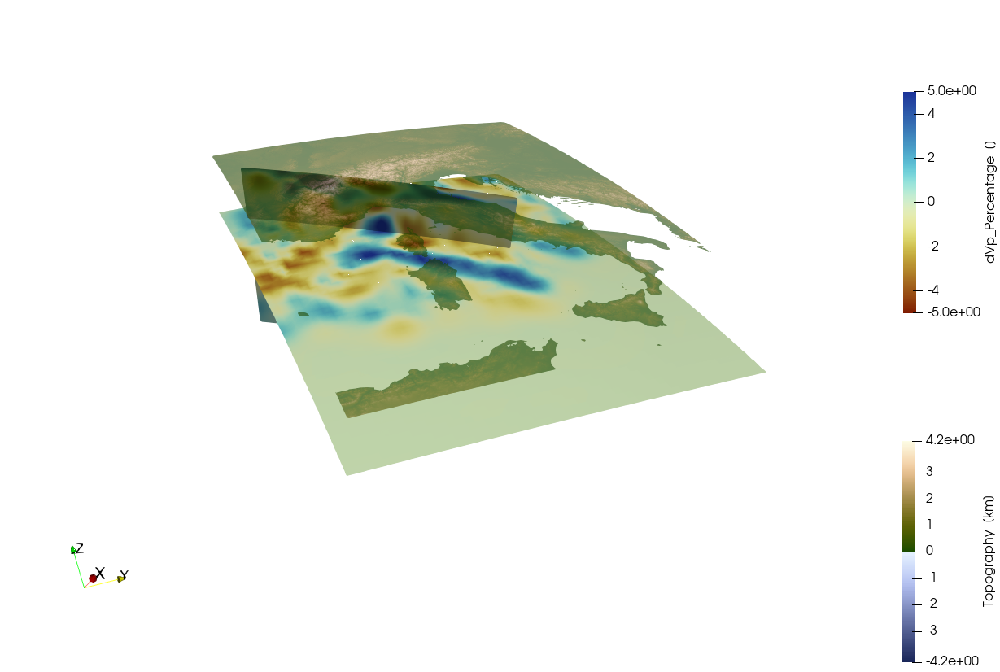
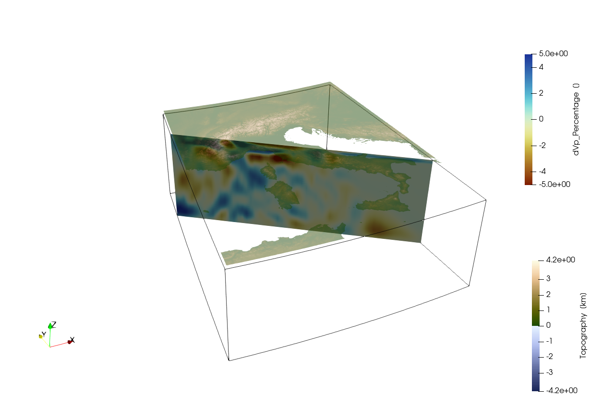
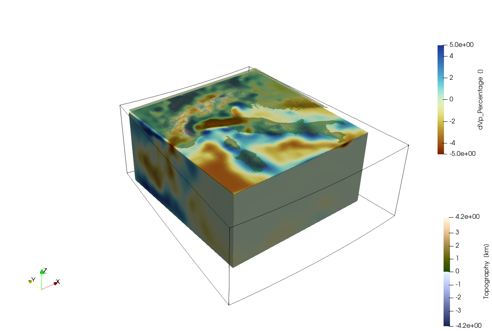

Getting started
Aim:
The aim of this tutorial is to give you a feeling for the GeophysicalModelGenerator package.
1. Loading data
We start with loading the package, and assume that you have installed it:
using GeophysicalModelGenerator;Lets load a first 3D seismic tomography data set of the Alps. We uploaded an example file on Zenodo here, which comes from the paper of Paffrath et al. 2021. We can load this in GMG with:
Tomo_Alps_full = load_GMG("https://zenodo.org/records/10738510/files/Paffrath_2021_SE_Pwave.jld2?download=1")GeoData
size : (162, 130, 42)
lon ϵ [ -13.3019 : 35.3019]
lat ϵ [ 30.7638 : 61.2362]
depth ϵ [ -606.0385 : 31.0385]
fields : (:dVp_Percentage,)
This is a so-called GeoData object, which is a 3D grid of seismic velocities as a function of longitude, latitude and depth, which can include various fields (here we only have a single field: :dVp_Percentage) We can save this in VTK format, which is a widely used format that can for example be read by the 3D open-source visualization tool Paraview:
write_paraview(Tomo_Alps_full,"Tomo_Alps_full")Saved file: Tomo_Alps_full.vts
We also uploaded a dataset with the topography of the Alpine region which can be downloaded with:
Topo_Alps = load_GMG("https://zenodo.org/records/10738510/files/AlpsTopo.jld2?download=1")GeoData
size : (961, 841, 1)
lon ϵ [ 4.0 : 20.0]
lat ϵ [ 36.0 : 50.0]
depth ϵ [ -4.181 : 4.377]
fields : (:Topography,)
Different than the 3D tomographic model, the topography has size 1 for the last index which indicates that this is a 3D surface. As you can see, the depth varies, which is because it is a warped surface. We can write this to disk as well
write_paraview(Topo_Alps,"Topo_Alps")Saved file: Topo_Alps.vts
If we open both datasets in Paraview, and changing both files from outline/solid colors to the corresponding data field, we see:  Now we can change the colormap on the right side, marked by a red square. For topography we use the Oleron colormap, which you can download here. For the tomography we use the Roma scientific colormap. You will now see a blue'ish box of the tomography, this is not the best color to visualise the data. Let's invert the colormap by clicking on the item marked by the blue arrow. Now we see the tomography in a more intuitive way, but the topography is not visible anymore. We can change the opacity of the tomography by setting a value in the Opacity field marked by the red square. Note that you will need to adapt the range of the topography colormap as the change in color is not at 0.0. By clicking on the item marked by the black arrow, you can set your desired range.

Now you should see something like this: 
2. Extract subset of data
As you can see the tomographic data covers a much larger area than the Alps itself, and in most of that area there is no data. It is thus advantageous to cut out a piece of the dataset that we are interested in which can be done with extract_subvolume:
Tomo_Alps = extract_subvolume(Tomo_Alps_full,Lon_level=(4,20),Lat_level=(36,50), Depth_level=(-600,-10))
write_paraview(Tomo_Alps,"Tomo_Alps");Saved file: Tomo_Alps.vts
After loading the new data again in paraview, switching to the proper data field and adjusting the colormap, you should see something like this: 
3. Create cross sections
Paraview has the option to Slice through the data but it is not very intuitive to do this in 3D. Another limitation of Paraview is that it does not have native support for spherical coordinates, and therefore the data is translated to Cartesian (x,y,z) coordinates (with the center of the Earth at (0,0,0)). That makes this a bit cumbersome to make a cross-section at a particular location. If you are interested in this you can use the cross_section function:
data_200km = cross_section(Tomo_Alps, Depth_level=-200)GeoData
size : (54, 60, 1)
lon ϵ [ 3.9057 : 19.9057]
lat ϵ [ 35.9606 : 49.8976]
depth ϵ [ -202.0385 : -202.0385]
fields : (:dVp_Percentage, :FlatCrossSection)
As you see, this is not exactly at 200 km depth, but at the closest z-level in the data sets. If you want to be exactly at 200 km, use the Interpolate option:
data_200km_exact = cross_section(Tomo_Alps, Depth_level=-200, Interpolate=true)GeoData
size : (100, 100, 1)
lon ϵ [ 3.9057 : 19.9057]
lat ϵ [ 35.9606 : 49.8976]
depth ϵ [ -200.0 : -200.0]
fields : (:dVp_Percentage, :FlatCrossSection)
In general, you can get help info for all functions with ?:
help?> cross_section
search: cross_section cross_section_volume cross_section_points cross_section_surface flatten_cross_section
cross_section(DataSet::AbstractGeneralGrid; dims=(100,100), Interpolate=false, Depth_level=nothing, Lat_level=nothing, Lon_level=nothing, Start=nothing, End=nothing, Depth_extent=nothing, section_width=50km)
Creates a cross-section through a GeoData object.
• Cross-sections can be horizontal (map view at a given depth), if Depth_level is specified
• They can also be vertical, either by specifying Lon_level or Lat_level (for a fixed lon/lat), or by defining both Start=(lon,lat) & End=(lon,lat) points.
• Depending on the type of input data (volume, surface or point data), cross sections will be created in a different manner:
1. Volume data: data will be interpolated or directly extracted from the data set.
2. Surface data: surface data will be interpolated or directly extracted from the data set
3. Point data: data will be projected to the chosen profile. Only data within a chosen distance (default is 50 km) will be used
• Interpolate indicates whether we want to simply extract the data from the data set (default) or whether we want to linearly interpolate it on a new grid, which has dimensions as specified in dims NOTE: THIS ONLY APPLIES TO VOLUMETRIC AND SURFACE DATA
SETS
• 'section_width' indicates the maximal distance within which point data will be projected to the profile
Example:
≡≡≡≡≡≡≡≡
julia> Lon,Lat,Depth = lonlatdepth_grid(10:20,30:40,(-300:25:0)km);
julia> Data = Depth*2; # some data
julia> Vx,Vy,Vz = ustrip(Data*3),ustrip(Data*4),ustrip(Data*5);
julia> Data_set3D = GeoData(Lon,Lat,Depth,(Depthdata=Data,LonData=Lon, Velocity=(Vx,Vy,Vz)));
julia> Data_cross = cross_section(Data_set3D, Depth_level=-100km)
GeoData
size : (11, 11, 1)
lon ϵ [ 10.0 : 20.0]
lat ϵ [ 30.0 : 40.0]
depth ϵ [ -100.0 km : -100.0 km]
fields: (:Depthdata, :LonData, :Velocity)Let's use this to make a vertical cross-section as well:
Cross_vert = cross_section(Tomo_Alps, Start=(5,47), End=(15,44))GeoData
size : (100, 100, 1)
lon ϵ [ 5.0 : 15.0]
lat ϵ [ 47.0 : 44.0]
depth ϵ [ -606.0385 : -15.5769]
fields : (:dVp_Percentage, :FlatCrossSection)
And write them to paraview:
write_paraview(Cross_vert,"Cross_vert");
write_paraview(data_200km,"data_200km");Saved file: Cross_vert.vts
Saved file: data_200km.vts
After loading the data in Paraview, you can use the Clip tool on the topography to only show the topography above sealevel and make it 60% transparent. Also adjust the colormap of the tomography to 5.0 and -5.0

After doing all these steps, you should see something like this: 
4. Cartesian data
As you can see, the curvature or the Earth is taken into account here. Yet, for many applications it is more convenient to work in Cartesian coordinates (kilometers) rather than in geographic coordinates. GeophysicalModelGenerator has a number of tools for this. First we need to define a ProjectionPoint around which we project the data
proj = ProjectionPoint(Lon=12.0,Lat =43)
Topo_cart = convert2CartData(Topo_Alps, proj)CartData
size : (961, 841, 1)
x ϵ [ -748.7493528015041 : 695.3491277129204]
y ϵ [ -781.2344794653393 : 831.6826244089501]
z ϵ [ -4.181 : 4.377]
fields : (:Topography,)
And do the same with the tomography:
Tomo_cart = convert2CartData(Tomo_Alps, proj)CartData
size : (54, 60, 39)
x ϵ [ -757.8031278236692 : 687.0608438357591]
y ϵ [ -785.601866956207 : 821.3433749818317]
z ϵ [ -606.0385 : -15.5769]
fields : (:dVp_Percentage,)
Save:
write_paraview(Tomo_cart,"Tomo_cart");
write_paraview(Topo_cart,"Topo_cart");Saved file: Tomo_cart.vts
Saved file: Topo_cart.vts
 As the coordinates are now aligned with the x,y,z coordinate axes in Paraview it is now straightforward to use the build-in tools to explore the data.
5. Rectilinear data
Yet, because of the curvature of the Earth, the resulting 3D model is not strictly rectilinear, which is often a requirement for Cartesian numerical models. This can be achieved in a relatively straightforward manner, by creating a new 3D dataset that is slightly within the curved boundaries of the projected data set:
Tomo_rect = CartData(xyz_grid(-550.0:10:600, -500.0:10:700, -600.0:5:-17));the routine project_CartData will then project the data from the geographic coordinates to the new rectilinear grid:
Tomo_rect = project_CartData(Tomo_rect, Tomo_Alps, proj)CartData
size : (116, 121, 117)
x ϵ [ -550.0 : 600.0]
y ϵ [ -500.0 : 700.0]
z ϵ [ -600.0 : -20.0]
fields : (:dVp_Percentage,)
we can do the same with topography:
Topo_rect = CartData(xyz_grid(-550.0:1:600, -500.0:1:700, 0))
Topo_rect = project_CartData(Topo_rect, Topo_Alps, proj)CartData
size : (1151, 1201, 1)
x ϵ [ -550.0 : 600.0]
y ϵ [ -500.0 : 700.0]
z ϵ [ -3.6366708734115245 : 4.2399313641768455]
fields : (:Topography,)
Save it:
write_paraview(Tomo_rect,"Tomo_rect");
write_paraview(Topo_rect,"Topo_rect");Saved file: Tomo_rect.vts
Saved file: Topo_rect.vts

At this stage, the data can directly be used to generate Cartesian numerical model setups, as explained in the other tutorials.
This page was generated using Literate.jl.